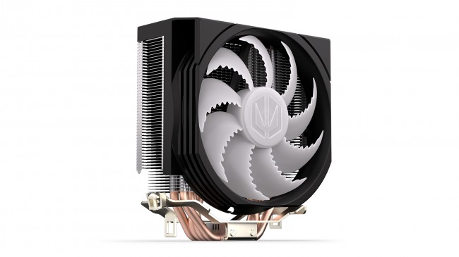

Komponenty komputerowe
Chłodzenie procesora – klucz do jego żywotności
Procesor generuje dużo ciepła, zwłaszcza pod dużym obciążeniem. Chłodzenie procesora ma za zadanie odprowadzać to ciepło, by zapobiec przegrzewaniu i spadkom wydajności. Możemy wyróżnić dwa główne typy: powietrzne (radiatory z wentylatorem) i wodne. Najczęściej spotykane chłodzenia powietrzne są tanie, łatwe w montażu i wystarczające do większości zastosowań. Wydajniejsze modele wyposażone są w duże radiatory i kilka wentylatorów. Dla procesorów mocno podkręcanych lub pracujących w wysokim obciążeniu przez długi czas, zaleca się chłodzenie wodne. Dobre chłodzenie procesora to nie tylko wyższa wydajność, ale także cichsza praca i dłuższa żywotność CPU.

Chłodzenie wodne – nowoczesna cisza i wydajność
Chłodzenie wodne to zaawansowany system odprowadzania ciepła z komponentów komputera, głównie procesora i karty graficznej. W przeciwieństwie do tradycyjnych wentylatorów, używa cieczy krążącej w zamkniętym obiegu. Ciecz pochłania ciepło z bloku chłodzącego, przepływa przez węże do chłodnicy, gdzie jest schładzana przez wentylatory, i wraca z powrotem. Chłodzenia wodne są bardzo skuteczne, ciche i estetyczne – szczególnie popularne wśród graczy i entuzjastów. Dzielą się na gotowe zestawy AIO (All-in-One) oraz systemy custom loop, które użytkownik składa samodzielnie. Choć są droższe i bardziej skomplikowane w montażu, zapewniają wyjątkową kulturę pracy i niskie temperatury.